Chubby Baby Axolotl — Free Pattern + Video
This adorable little axolotl works up in under two hours and makes the perfect quick gift! Includes step-by-step photos, a video walkthrough, and tips for shaping those cute little gills.
Read Full PatternYarnoodle Blog
Crochet guides, yarn reviews, and step-by-step amigurumi tutorials to level up your making.

This adorable little axolotl works up in under two hours and makes the perfect quick gift! Includes step-by-step photos, a video walkthrough, and tips for shaping those cute little gills.
Read Full Pattern
Create your own magical sleepy dragon with this detailed step-by-step tutorial and free printable checklist.
Read More
A perfect stash buster! These little hedgehogs are so fun to make and customize with different colours.
Read More
The cutest duo! This pattern includes instructions for both the mama bear and her baby — perfect for gifting.
Read More
Learn how to make posable arms and legs that can grip and hang — featuring our sloth pattern.
Read More
The internet's favourite animal gets the amigurumi treatment! Includes a tiny flower crown tutorial.
Read More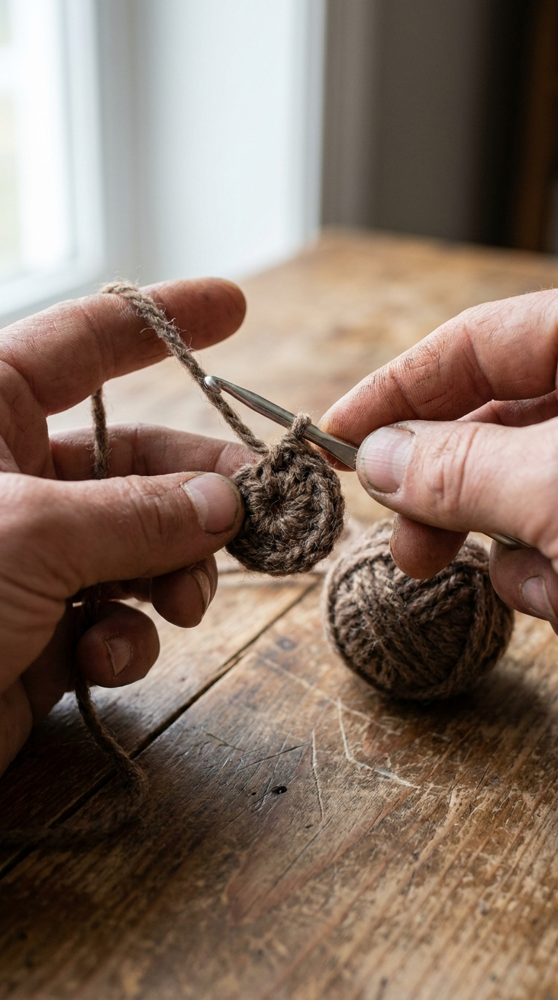
The magic ring is the foundation of every amigurumi. Master it once and never have gaps again.
Read More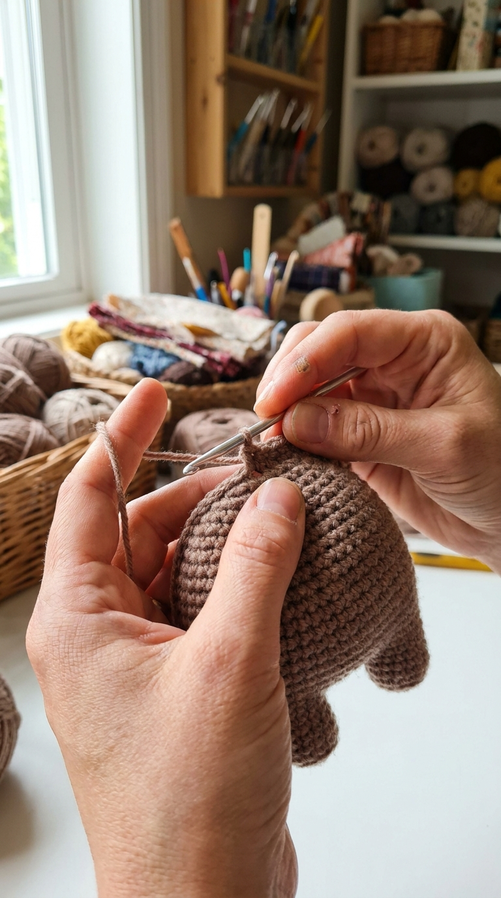
Cotton vs acrylic vs velvet — I tested them all so you don't have to. Here's my honest verdict.
Read More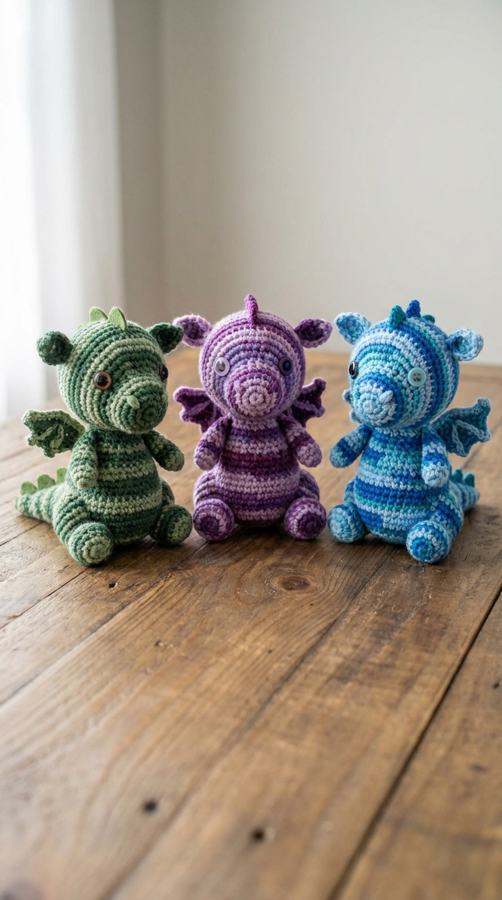
See how changing just the yarn colour gives you three completely different baby dragons from the same base pattern.
Read More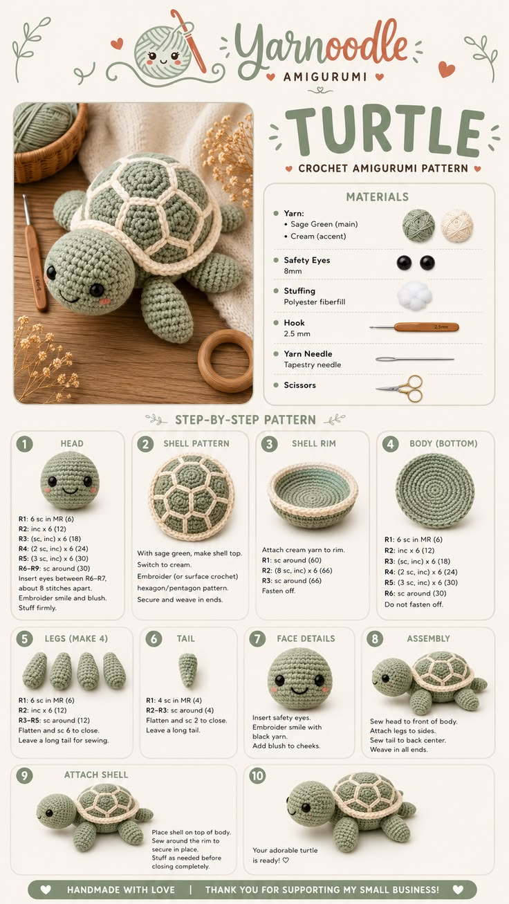
Make your own sweet turtle amigurumi with this detailed crochet pattern!
Read More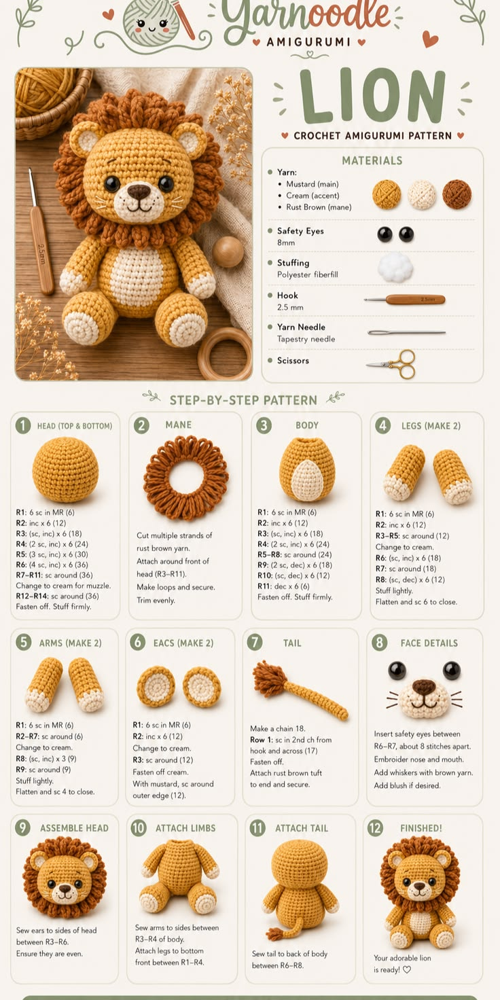
Create this adorable lion amigurumi with our free crochet pattern guide!
Read More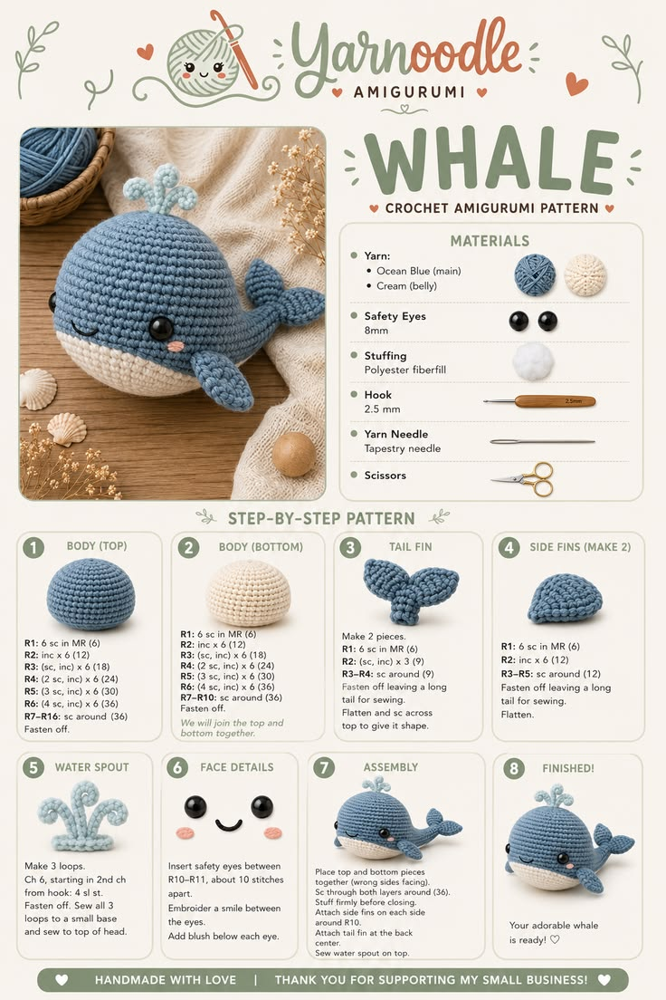
Learn how to crochet this sweet whale amigurumi with our easy step-by-step pattern guide!
Read More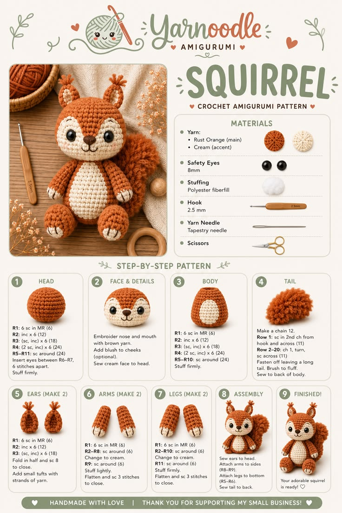
Follow this easy crochet squirrel amigurumi pattern to make your own fluffy-tailed plush toy!
Read More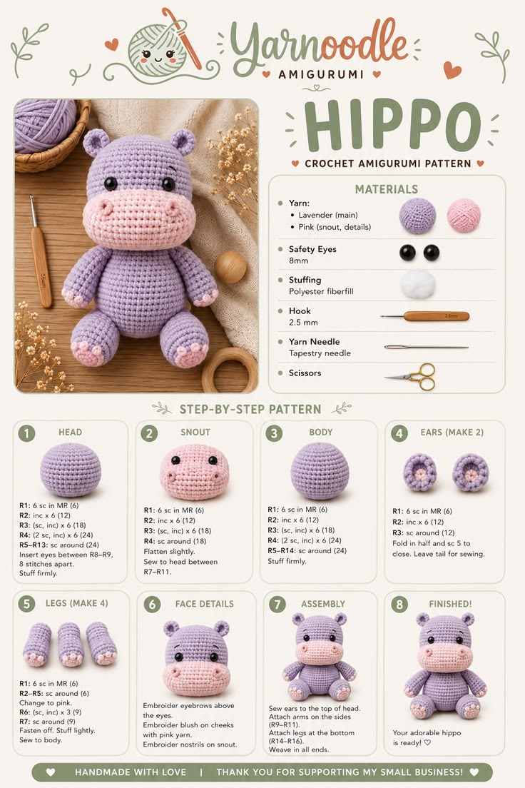
Make this cute hippo amigurumi with our free crochet pattern guide!
Read More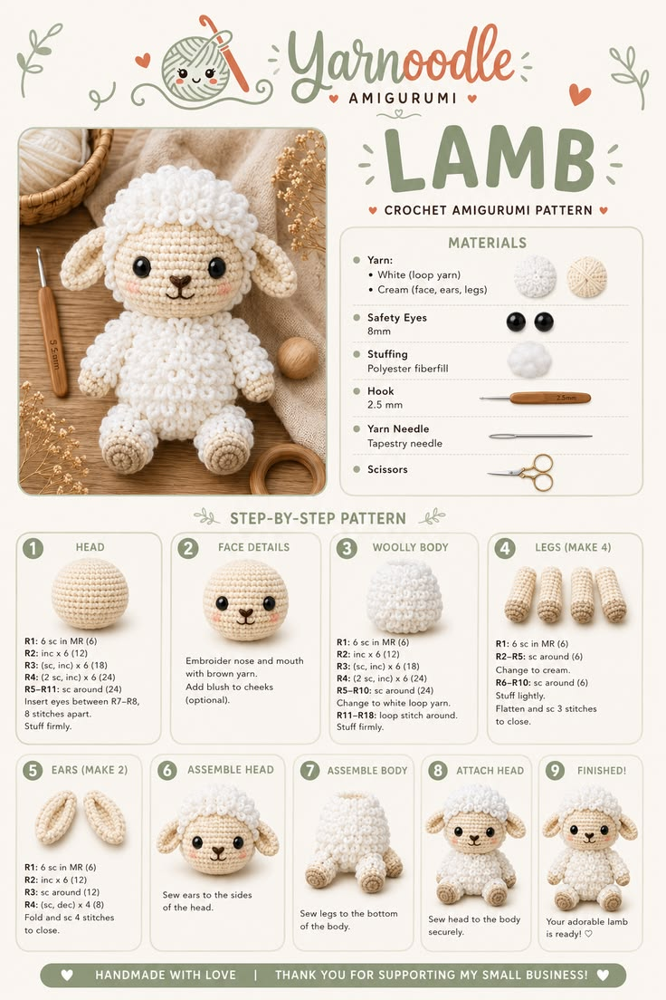
Learn to crochet this fluffy lamb amigurumi with our beginner-friendly pattern!
Read More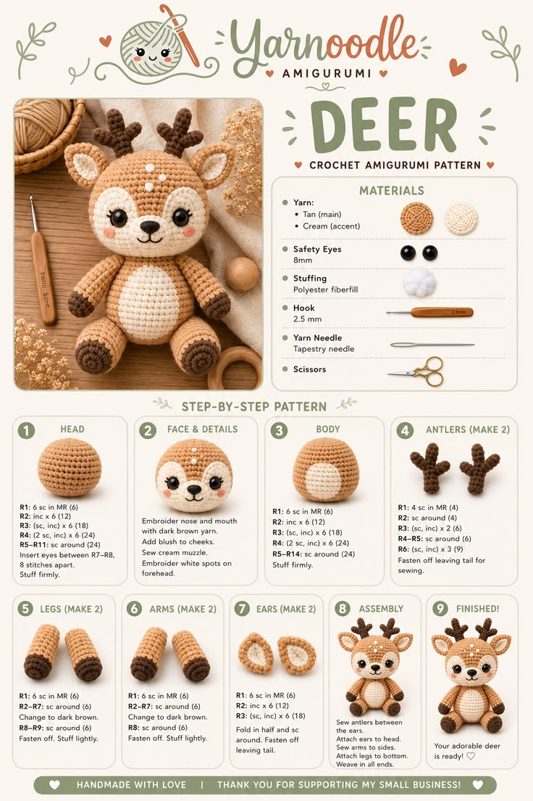
Follow this easy crochet deer amigurumi pattern to make your own woodland plush toy!
Read More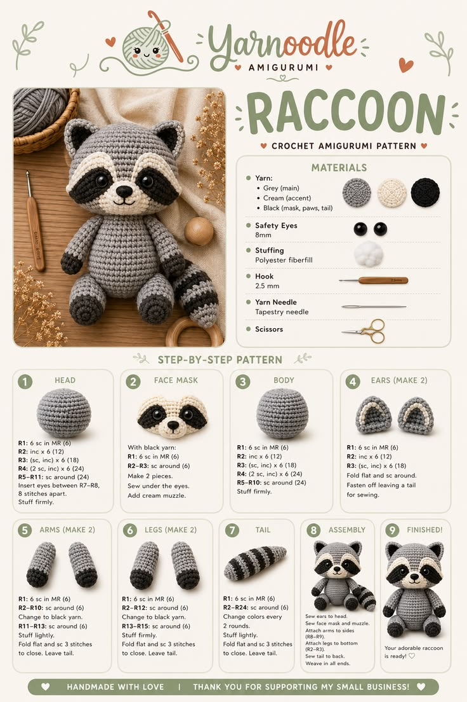
Create this adorable raccoon amigurumi with our free crochet pattern guide!
Read More